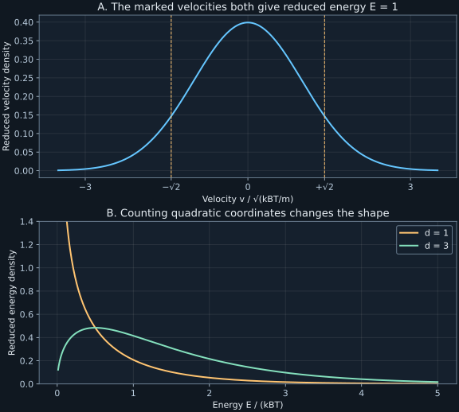

Chapter 2 · Lecture 3
Densities, transformations, and characteristic functions
A gas has a Gaussian distribution of each velocity component. An instrument reports kinetic energy instead. Replacing velocity by energy inside the Gaussian exponent gives the right Boltzmann factor but the wrong probability density: in one dimension it misses an inverse square root of energy, and in three dimensions it misses a positive square root. Those factors change threshold probabilities. The task is to predict the energy readout from a velocity model without losing probability during the coordinate change.
Lecture 3 supplies the sequence from cumulants through continuous laws, characteristic functions, Gaussian statistics, and squared variables. The energy calculation in general dimension, counterexamples, laboratory, and exercises are developed here. The full caption text and three timed stills were inspected; the latter give partial notation checks, not continuous audiovisual coverage. Fourier signs are declared explicitly below.
2.1 What survives when the variable becomes continuous L3 0:33
The cumulant argument in Section 1.9 did not depend on an integer support. Let $X$ now be a real random variable with mean $\mu$, and assume its moment-generating function $\mathcal M_X(u)=\mathbb E[e^{uX}]$ is finite for real $u$ in an open interval containing zero. The parameter $u$ has units inverse to $X$. Define $\mathcal K_X(u)=\log\mathcal M_X(u)$ and $\kappa_r=\mathcal K_X^{(r)}(0)$ for positive integer $r$. The logarithm is locally well defined because the real expectation is positive and equals one at zero.
The first two derivatives give $\kappa_1=\mu$ and $\kappa_2=\mathbb E[X^2]-\mu^2$. Translation and scaling follow directly from $\mathcal K_{aX+b}(u)=bu+\mathcal K_X(au)$ for real constants $a,b$. Thus $\kappa_r(aX+b)=a^r\kappa_r(X)$ for $r\geq2$. If $X$ and $Y$ are independent and both functions exist near zero, their exponentials factor inside the expectation, so $\mathcal K_{X+Y}=\mathcal K_X+\mathcal K_Y$. The same algebra works for a count, a velocity, or a voltage.
A useful check is the Poisson difference from chapter 1. If its independent component means are $\lambda_+,\lambda_-$, then $\mathcal K(u)=\lambda_+(e^u-1)+\lambda_-(e^{-u}-1)$. Differentiation yields $\kappa_r=\lambda_++(-1)^r\lambda_-$. Even cumulants record summed noise; odd cumulants record the imbalance. Continuity of the measured coordinate does not create additivity. Independence creates it.
The existence assumption remains essential. The finite-four-moment example in chapter 1 has no moment-generating function on an open interval around zero. Treating every expectation as a convergent power series would silently exclude such laws. A transform with a bounded integrand avoids this difficulty and provides the next tool.
2.2 Density is probability per unit coordinate L3 18:54
Define the cumulative distribution function $F_X(x)=\Pr(X\leq x)$ for real $x$. It is nondecreasing and right continuous, with limiting values zero and one at the two infinities. If the law is absolutely continuous, there is a nonnegative integrable function $\rho_X$ such that $\Pr(a\lt X\leq b)=\int_a^b\rho_X(x)\,dx$ for every finite interval. This function is a probability density. Its integral over the real line is one; its units are inverse to the coordinate units.
A density can exceed one. A velocity uniform on an interval of width $0.1$ meters per second has density $10$ seconds per meter on that interval. Integrating it over the interval gives one. A value at a single point has zero probability for this law, because the integral over a point is zero. A large density is therefore compatible with a small probability for a narrow measurement bin.
Not every real-valued law has an ordinary density. An atom at $x_0$ has probability $a_0=\Pr(X=x_0)\gt0$ and produces a jump of size $a_0$ in $F_X$. A mixture with a stalled instrument can combine such an atom with a continuous velocity distribution. Physicists often write the atom as $a_0\delta(x-x_0)$, where the Dirac delta is defined through integration against test functions: $\int f(x)\delta(x-x_0)\,dx=f(x_0)$. It is not an ordinary function taking an infinite value at one point. The cumulative distribution handles both parts without that shorthand.
There are also continuous cumulative distributions without an ordinary density, so “no atoms” is weaker than “has a density.” The branch calculations later in this chapter assume an absolutely continuous input. An instrument with quantization or a finite probability of zero response needs its discrete masses treated separately.
2.3 A transform that always exists L3 21:29
The expectation exists for every probability law because $|e^{ikX}|=1$. The triangle inequality gives $|\phi_X(k)|\leq1$, normalization gives $\phi_X(0)=1$, and complex conjugation gives $\phi_X(-k)=\overline{\phi_X(k)}$. Dominated convergence proves continuity in $k$. These are necessary checks when someone proposes a transform. For example, $e^{k^2}$ fails the magnitude bound for every nonzero $k$ and cannot describe a probability law.
Another necessary condition exposes why pointwise checks alone are weak. For any complex numbers $c_1,\ldots,c_m$ and real $k_1,\ldots,k_m$, expanding a nonnegative squared modulus gives
$$\sum_{j,l=1}^{m}c_j\overline{c_l}\phi_X(k_j-k_l)=\mathbb E\left[\left|\sum_{j=1}^{m}c_je^{ik_jX}\right|^2\right]\geq0.\tag{2.1}$$This property is called positive definiteness. The identity proves its necessity directly; a general converse is not needed here. When $\phi_X$ is integrable, Fourier inversion gives the density $\rho_X(x)=(2\pi)^{-1}\int e^{-ikx}\phi_X(k)\,dk$ at its continuity points. Atomic laws need an inversion statement for measures instead. A formal inverse that changes sign cannot be a density.
For independent $X,Y$, factorization gives $\phi_{X+Y}(k)=\phi_X(k)\phi_Y(k)$. If both have densities, the corresponding expression in coordinate space is the convolution $\rho_{X+Y}(s)=\int\rho_X(x)\rho_Y(s-x)\,dx$. The condition $Y=s-X$ supplies the argument of the second density; the product uses independence. The transform is often preferable because multiplication replaces an integral over every possible partition of the sum.
Finite moments allow derivatives: if $\mathbb E[|X|^r]\lt\infty$, differentiation under the expectation gives $\phi_X^{(r)}(0)=i^r\mathbb E[X^r]$. The domination is by $|X|^r$. An existing characteristic function therefore does not imply existing derivatives or moments. Nor does it license substituting imaginary arguments into a moment-generating function that never existed near zero.
2.4 Gaussian normalization, widths, and transforms L3 28:34
A centered velocity component at thermal equilibrium motivates a two-parameter family. A Gaussian or normal variable $X\sim\mathcal N(\mu,\sigma^2)$ has real mean $\mu$, positive standard deviation $\sigma$, and density
$$\rho_X(x)=\frac{1}{\sqrt{2\pi}\sigma}\exp\left[-\frac{(x-\mu)^2}{2\sigma^2}\right].\tag{2.2}$$To check the constant, put $z=(x-\mu)/\sigma$. The square of $I=\int_{-\infty}^{\infty}e^{-z^2/2}\,dz$ is an integral over the plane. Polar coordinates with radius $r\geq0$ and angle $0\leq\theta\lt2\pi$ give $I^2=2\pi\int_0^\infty r e^{-r^2/2}\,dr=2\pi$. Positivity fixes $I=\sqrt{2\pi}$. Symmetry gives centered mean zero; the moment calculation below gives variance $\sigma^2$.
The density falls to half its peak when $(x-\mu)^2/(2\sigma^2)=\log2$. The full width at half maximum is therefore $2\sqrt{2\log2}\sigma=2.354820045\sigma$, as evaluated in the lab. It is a density-width convention, not a probability interval. Integrating (2.2) after the same coordinate change gives
$$F_X(x)=\frac12\left[1+\operatorname{erf}\left(\frac{x-\mu}{\sqrt2\sigma}\right)\right],\qquad \operatorname{erf}(z)=\frac2{\sqrt\pi}\int_0^z e^{-u^2}\,du.\tag{2.3}$$The error-function definition is DLMF 7.2.1. The upper integration limit depends on its argument; using infinity there would make it a constant. Symmetry immediately checks $F_X(\mu)=1/2$. Threshold probabilities require the cumulative distribution or its complement, not the value of the density at the threshold.
For real $u$, completing the square in the absolutely convergent integral gives $-(x-\mu)^2/(2\sigma^2)+ux=-(x-\mu-\sigma^2u)^2/(2\sigma^2)+\mu u+\sigma^2u^2/2$. The shifted Gaussian integrates to one, so its remaining exponential is $\mathcal M_X(u)$. Taking its logarithm proves the second expression.
A real-variable derivation also checks the Fourier sign without shifting a contour. Let $Z=X-\mu$ and $\psi(k)=\mathbb E[e^{ikZ}]$. Its density satisfies $\rho'_Z(z)=-z\rho_Z(z)/\sigma^2$. Integration by parts, whose boundary term vanishes with the Gaussian tail, gives $\psi'(k)=-\sigma^2k\psi(k)$. With $\psi(0)=1$, this differential equation has solution $e^{-\sigma^2k^2/2}$. Restoring the translation multiplies it by $e^{ik\mu}$. Differentiating the quadratic logarithm proves the cumulant claim. ∎
The width in $k$ is inverse to the width in $x$: a larger $\sigma$ makes the exponential decay more rapidly with $|k|$. A physical temperature changes velocity scatter; it changes the transform curvature at zero in exactly the corresponding way. This is a transform statement, independent of whether a particular gas actually satisfies the equilibrium assumptions.
2.5 Gaussian moments and the limits of four-number diagnostics L3 35:44
Symmetry forces every odd centered Gaussian moment to vanish. For even moments, let $M_{2r}=\mathbb E[Z^{2r}]$ with $Z=X-\mu$ and integer $r\geq1$. The density derivative used above gives
$$M_{2r}=-\sigma^2\int z^{2r-1}\rho'_Z(z)\,dz=(2r-1)\sigma^2M_{2r-2}.\tag{2.5}$$The boundary term is zero because a Gaussian decays faster than every fixed polynomial. Starting at $M_0=1$ proves $M_{2r}=(2r-1)!!\sigma^{2r}$, where the double factorial is $1\cdot3\cdots(2r-1)$. Thus $M_2=\sigma^2$, $M_4=3\sigma^4$, and $M_6=15\sigma^6$. The coefficient counts pairings of $2r$ labeled objects: choose one object's partner in $2r-1$ ways, then pair the remaining objects recursively. This elementary pairing argument anticipates Gaussian contraction formulas without assuming field theory.
For any variable with finite positive variance and finite fourth moment, define skewness $\gamma_1=\mathbb E[(X-\mu)^3]/\sigma^3$ and excess kurtosis $\gamma_2=\mathbb E[(X-\mu)^4]/\sigma^4-3$. Both vanish for a Gaussian. Their converse fails. A variable taking $-\sqrt3,0,+\sqrt3$ with probabilities $1/6,2/3,1/6$ has mean zero, variance one, zero third moment, and fourth moment three. It has the same first four moments as the standard Gaussian, yet it is a three-point law. Its sixth moment is nine instead of fifteen.
Consequently, zero excess kurtosis cannot identify Gaussianity, and the sign of kurtosis alone does not order every tail probability or fix a peak's shape. It is a fourth-moment diagnostic. A finite list of moments cannot generally determine all instrument threshold probabilities. The stronger result about a cumulant-generating function terminating exactly at a finite degree is a different theorem; no truncation of empirical cumulants is used as a probability model here.
2.6 A squared coordinate needs both inverse branches L3 50:07
Let $Y=g(X)$ be a transformed reading, where $X$ has density $\rho_X$ and $g$ is differentiable on its monotone branches. At a regular value $y$, list every inverse point $x_j$ satisfying $g(x_j)=y$, with nonzero derivative. On one such branch, probability conservation gives $\rho_X(x_j)|dx_j|$ in an infinitesimal output interval. Since $|dx_j/dy|=1/|g'(x_j)|$, adding the disjoint input branches yields
Integrate the proposed density over any output interval contained in the regular region. The change of variables on each branch converts its integral to the input probability on that branch. The inverse images are disjoint except for endpoints of zero input probability. Summing their probabilities gives exactly $\Pr(Y\text{ lies in the interval})$. Thus (2.6) is the density there. The absolute derivative preserves nonnegativity on decreasing branches. ∎
For $Y=X^2$ and a centered Gaussian of variance $\sigma^2$, every $y\gt0$ has two inverse points $\pm\sqrt y$, both with derivative magnitude $2\sqrt y$. Their equal contributions give
$$\rho_Y(y)=\frac{e^{-y/(2\sigma^2)}}{\sqrt{2\pi\sigma^2y}},\quad y\gt0;\qquad \rho_Y(y)=0\quad(y\lt0).\tag{2.7}$$The density diverges at the critical value zero but is integrable: near zero its integral is proportional to $\sqrt y$. There is no atom at zero, because $\Pr(X=0)=0$. Its cumulative distribution offers a second derivation: $\Pr(X^2\leq y)=F_X(\sqrt y)-F_X(-\sqrt y)$ for $y\geq0$; differentiating gives the two terms in (2.6). Retaining only the positive root halves the total probability, a defect caught by the laboratory normalization check.

2.7 Counting quadratic coordinates gives a gamma energy law
Assume a classical nonrelativistic particle of mass $m\gt0$ in equilibrium at absolute temperature $T\gt0$, with $d$ independent Cartesian velocity components $V_j\sim\mathcal N(0,k_BT/m)$. Here $k_B$ is Boltzmann's constant and $d$ is a positive integer. Write $\theta=k_BT$, with energy units, and define kinetic energy $E=\tfrac12m\sum_{j=1}^{d}V_j^2$. The equilibrium Gaussian velocities are the physical input; the energy law is a consequence.
For one component, applying (2.7) and then the scaling $E=mY/2$ gives $\rho_E(e)=e^{-e/\theta}/\sqrt{\pi\theta e}$ for $e\gt0$. Both velocity signs have already been counted. The moment-generating function of this energy is $(1-\theta u)^{-1/2}$ for $u\lt1/\theta$, obtained by integrating the Gaussian with a changed quadratic coefficient. Independence multiplies $d$ copies.
The gamma function is $\Gamma(a)=\int_0^\infty s^{a-1}\exp(-s)\,ds$ for $a\gt0$. Substitution $s=e/\theta$ normalizes the proposed density. Integrating it against $\exp(ue)$ replaces $1/\theta$ by $1/\theta-u$ and gives $(1-\theta u)^{-d/2}$, exactly the product derived from the independent velocities. Uniqueness of a moment-generating function finite around zero identifies the law; alternatively the radial calculation below obtains its density directly. Its logarithm is $-(d/2)\log(1-\theta u)$, whose first two derivatives at zero yield the stated mean and variance. ∎
The density-of-states factor can be seen without transforms. In $d$ velocity dimensions, a shell of radius $v$ has volume proportional to $v^{d-1}dv$. Since $e=mv^2/2$, the radial derivative gives $dv=de/(mv)$. Combining these powers gives $v^{d-2}de$, proportional to $e^{d/2-1}de$. Multiplication by the Boltzmann weight $\exp(-e/\theta)$ and normalization recovers (2.8). Thus the factor counts the amount of velocity space producing an energy bin. It is not a change in the temperature of the exponential.
For $d=1$, the density diverges at zero; for $d=2$, it is exponential; for $d=3$, it vanishes at zero and peaks at $e=\theta/2$. The mean in three dimensions is $3\theta/2$, so the most probable and mean energies differ. At the threshold $3\theta$, their upper-tail probabilities are 0.01430588, 0.04978707, and 0.11161023. A detector that confuses a component energy with total three-dimensional energy therefore predicts a substantially different fraction above the same threshold. These are evaluations of the exact laws, not measured gas data.
The gamma integral and its parameter domains are independently recorded in DLMF 5.9.1. The instructor's notes, PDF page 31, give the three-dimensional Maxwell speed and energy laws. The derivation here extends the counting argument to arbitrary integer $d$ while making the independence and quadratic-energy assumptions explicit.
2.8 Laboratory: catch a missing branch before fitting a temperature
Run python code/ch02_energy.py with the dependencies in requirements.txt. The program uses reduced units $m=k_BT=1$ and generates 200,000 independent velocity vectors for each of $d=1,2,3$, with seed 202611082. It squares and sums the coordinates, checks energy normalization by adaptive quadrature, and compares the empirical cumulative distribution with the exact gamma cumulative distribution. Outputs are written beside the program as JSON and text; no network or external data are used.
d=1: mass=1.000000000, mean=0.499668, variance=0.501427, KS=0.001491 d=2: mass=1.000000000, mean=1.003337, variance=1.005157, KS=0.001716 d=3: mass=1.000000000, mean=1.498797, variance=1.497460, KS=0.001876 Incorrect one-branch mass: 0.500000000
The reported Kolmogorov–Smirnov distance, abbreviated KS, is the maximum absolute gap between the empirical and exact cumulative distributions. It is a numerical diagnostic of this simulation. The sample means are checked against six analytical standard errors $\sqrt{(d/2)/200000}$; this broad check catches normalization or scale mistakes without treating one sample as a proof. The exact-law tail probabilities above are evaluated with a survival function, avoiding cancellation from subtracting a near-unit cumulative probability.
The following minimal calculation tests the transformation's most consequential failure. It takes no input, prints a normalization integral, and writes no files. The substitution $e=s^2$ removes the integrable singularity at zero:
import numpy as np
from scipy.integrate import quad
mass = quad(lambda s: 2*np.exp(-s*s)/np.sqrt(np.pi),
0, np.inf)[0]
print(f"Both branches: {mass:.6f}")
print(f"One branch: {mass/2:.6f}")Both branches: 1.000000 One branch: 0.500000
Renormalizing a mistaken half-density would conceal this particular constant error in a symmetric example, but it would not repair a general transformation with unequal branches. The input law and its coordinate map must determine the normalization, rather than a fit absorbing a missing preimage into an arbitrary amplitude. The full lab also integrates Gaussian second, fourth, and sixth moments and checks its characteristic function by an independent cosine quadrature.
2.9 What the energy model captures and misses
The calculation translates a specified equilibrium velocity law into an energy distribution, with all inverse branches and coordinate volume included. It predicts both typical energy and threshold probabilities. It does not establish that a measured gas is equilibrated, that interacting particle velocities are independent, or that an instrument reports the full kinetic energy rather than one projection.
A nonzero bulk velocity gives noncentered Gaussian components and a different energy law. Quantum statistics, relativistic energy, constraints between coordinates, or an energy-dependent detector efficiency also change the model. The transformation formula still provides a method when its hypotheses hold, but the gamma law then needs a new derivation. Sums of independent fluctuations and the circumstances in which Gaussian behavior emerges belong to chapter 3; broad-tailed exceptions belong to chapter 4.
2.10 Exercises with worked solutions
Exercise 2.1 — A spike in the readout (conceptual)
An instrument reports exactly zero with probability $1/4$. Otherwise it reports a standard Gaussian velocity. Write its cumulative distribution and characteristic function. Does its continuous density integrate to one?
Worked solution
Let $\Phi$ be the standard Gaussian cumulative distribution. Conditioning on whether the instrument stalls gives $F(x)=\tfrac14\mathbf1_{\{x\geq0\}}+\tfrac34\Phi(x)$, where the indicator is one on the specified set and zero elsewhere. Its jump at zero is $1/4$. Linearity of expectation gives $\phi(k)=1/4+(3/4)e^{-k^2/2}$. The continuous part has density $(3/4)(2\pi)^{-1/2}e^{-x^2/2}$, integrating to $3/4$; the atom supplies the remaining mass. Forcing the continuous part alone to normalize to one would erase the instrument's stall mechanism.
Exercise 2.2 — Gaussian diagnostics without a Gaussian law (conceptual)
Verify the first four moments of the three-point law in Section 2.5. Compare its probability of $|X|\gt2$ with the standard Gaussian. What can zero skewness and excess kurtosis establish?
Worked solution
Symmetric outer points cancel every odd moment. The second moment is $2(1/6)3=1$, and the fourth is $2(1/6)9=3$. Thus both diagnostics vanish. Since its largest magnitude is $\sqrt3\lt2$, its threshold probability is zero. The Gaussian assigns $2[1-\Phi(2)]\gt0$, because its density is positive beyond two. The numerical value is unnecessary for this strict counterexample. Vanishing diagnostics establish these specific moment relations, not a full density or any particular nontrivial tail probability.
Exercise 2.3 — Absolute speed and squared speed (derive)
For $X\sim\mathcal N(0,\sigma^2)$, derive the density of $R=|X|$, then transform $R$ to $Y=R^2$. Explain precisely where the factor of two enters.
Worked solution
For $r\gt0$, the two input intervals near $r$ and $-r$ give $\rho_R(r)=\rho_X(r)+\rho_X(-r)=2\rho_X(r)$. They account for both signs once. The second map $y=r^2$ is one-to-one on $r\gt0$, so $\rho_Y(y)=\rho_R(\sqrt y)/(2\sqrt y)$. Substituting the Gaussian gives (2.7). Adding another factor of two at the second step would double-count signs already merged by $R$. Neither transformation creates an atom at zero, since the original Gaussian puts no mass on that point.
Exercise 2.4 — Energy cumulants in every dimension (derive)
Starting from the energy moment-generating function, derive the rth cumulant for integer $r\geq1$. Find the relative standard deviation and explain its large-$d$ behavior.
Worked solution
The logarithm is $\mathcal K_E(u)=-(d/2)\log(1-\theta u)=(d/2)\sum_{r\geq1}(\theta u)^r/r$ for $|\theta u|\lt1$. Comparing the coefficient of $u^r/r!$ gives $\kappa_r=(d/2)(r-1)!\theta^r$. The first two cases reproduce (2.8). Their ratio gives $\sqrt{\operatorname{Var}(E)}/\mathbb E[E]=\sqrt{2/d}$. The decrease follows because independent quadratic contributions add means and variances, while standard deviation is the square root of variance. Increasing temperature at fixed $d$ changes both scales equally and does not reduce this relative scatter. Independence is crucial to the dimension argument.
Exercise 2.5 — Identify the measured coordinate (compute/design)
A simulated equilibrium detector at $k_BT=1$ gives an energy mean near 1.5 and a fraction above energy three near 0.112. Compare one-, two-, and three-coordinate models using the lab. Can changing only the one-coordinate temperature fit both values?
Worked solution
The three-coordinate model has exact mean 1.5 and tail 0.11161023, consistent with the stated checks. One and two coordinates at the same temperature have means 0.5 and 1 and tails 0.01430588 and 0.04978707. To fit mean 1.5 with one coordinate requires scale $\theta=3$, rather than one. Its probability above energy three is then $\operatorname{erfc}(1)=0.15729921$, where $\operatorname{erfc}(x)=1-\operatorname{erf}(x)$. This differs from 0.11161023, so changing only the one-coordinate temperature cannot fit both the stated mean and tail.
The ratio $\operatorname{Var}(E)/\mathbb E[E]^2=2/d$ is two for one coordinate and $2/3$ for three coordinates, independent of temperature. Measuring variance supplies a second scale-free discrimination. The full distribution or a second threshold can also test the model; one mean alone cannot distinguish coordinate count from temperature.
Exercise 2.6 — A drifting gas (compute/design)
In one dimension let $V\sim\mathcal N(v_0,\sigma_V^2)$ and $E=mV^2/2$. Derive its energy density and mean. Design a numerical normalization check that does not assume equal inverse-branch weights.
Worked solution
For energy $e\gt0$, put $r=\sqrt{2e/m}$. The two derivatives have magnitude $mr$, so $\rho_E(e)=[\rho_V(r)+\rho_V(-r)]/(mr)$. The two terms are unequal when $v_0\ne0$; replacing their sum by twice the positive term is wrong. From the original variable, $\mathbb E[E]=(m/2)(\sigma_V^2+v_0^2)$. The second term is directed kinetic energy, so interpreting the total mean as thermal temperature overestimates it.
For a stable quadrature set $e=mr^2/2$ and integrate the proposed density times $de=mr\,dr$. The integrand becomes $\rho_V(r)+\rho_V(-r)$ on $r\gt0$, whose integral must be one. This substitution removes the endpoint singularity and checks branch accounting separately from the energy mean. Compare that integral and the energy-weighted integral with the normalization and mean above before fitting data. A sampled histogram alone can obscure a missing branch when one sign is rare.
2.11 Sources and attribution
- V. Balakrishnan, Continuous random variables, lecture 3, IIT Madras, NPTEL 115106089. Timestamp links navigate the corresponding topic starts.
- Official instructor notes, PDF pages 22–31: cumulants, densities, Gaussian moments, square transformation, and equilibrium energy. The error-function definition is corrected using the primary reference below. Characteristic functions here use the opposite, explicitly stated Fourier sign.
- NIST DLMF 7.2.1, error-function definition, and DLMF 5.9.1, gamma integral and domains. Both support the special-function normalizations used in the derivations.
The Gaussian characterization and transformation calculations are mathematical derivations under the stated models. Simulated outputs are synthetic checks. No raw captions, lecture images, or measured gas data are included in this reader.